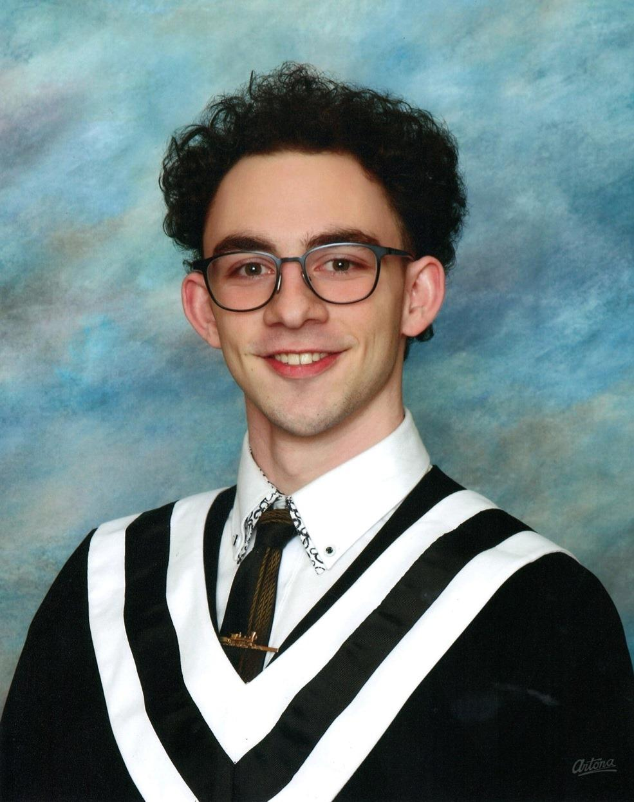
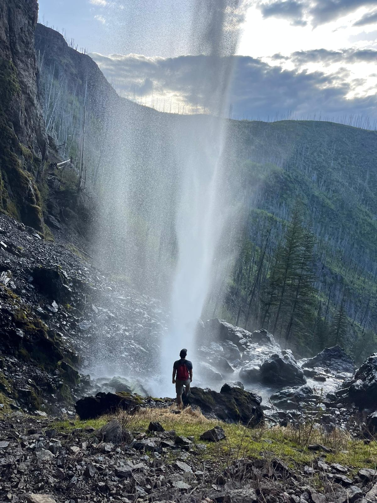
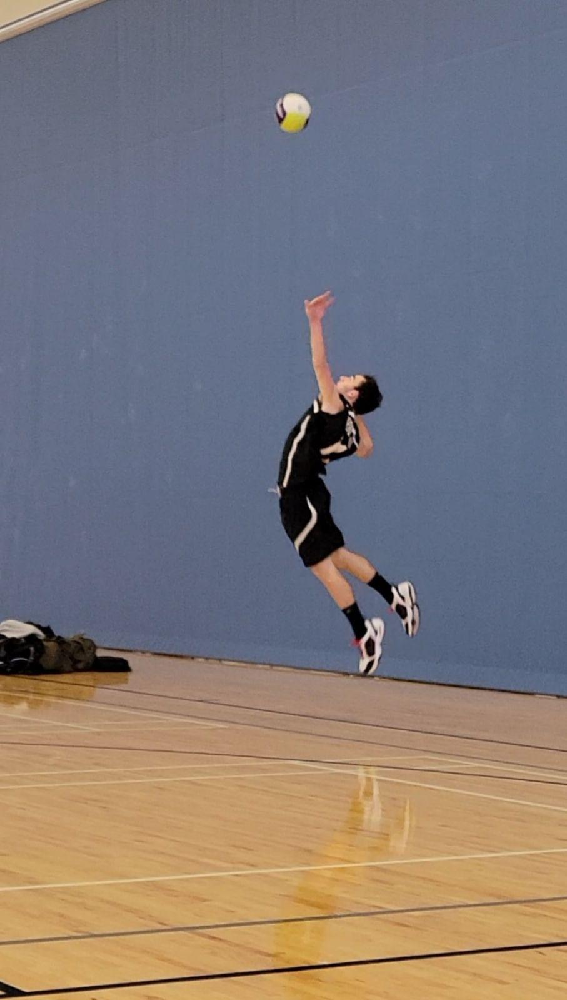
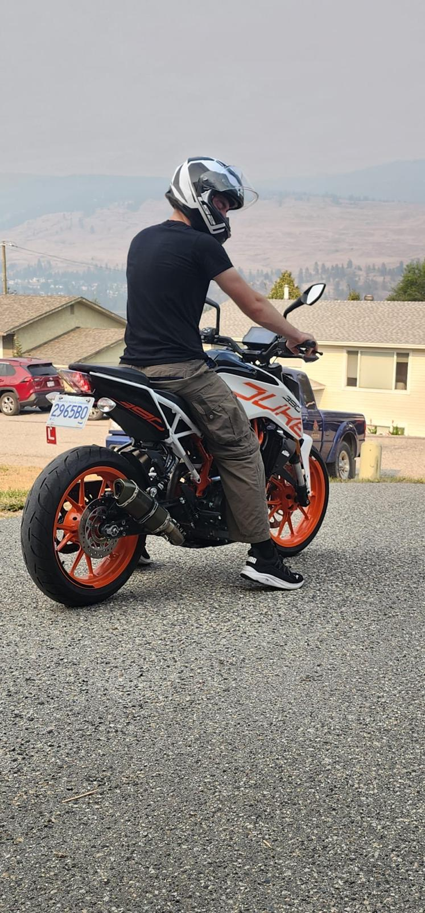

Hello! Welcome to my site! My name is
Marnu Kritzinger.
Engineering Physics Student | Robotics | UAVs
I am a 3rd year UBC Engineering Physics Student with a strong interest in robotics, UAVs, and electromechanical systems! I am currently looking for co-op and work opportunities for May2027-Dec2027 where I can use and develop my skills and interests in these topics further to help achieve my lifelong goal of leaving a lasting positive impact on the world!
Seeking engineering opportunities
Explore my work ↓
The man behind the projects!
About Me.
I am an Engineering Physics student at the University of British Columbia with a strong interest in robotics, UAV systems, and mechanical and electrical design! I especially love hands-on design and integration work, such as taking concepts or ideas from CAD models and sketches through manufactoring, assembly, testing, and iteration until they meet or exceed their intended goal.
My academic work and personal projects have given me a strong foundation across mechanical and electrical engineering disciplines, with a particular interest in robotics and UAV systems. I also have experience in programming and software engineering, and enjoy combining these skills to bring complex systems to life! In the future, I hope to start a company developing technology in search-and-rescue and natural disastor response, with the goal of making a lasting, positive impact on the world!
I am always looking for new opportunities to learn, build, and challenge myself, both inside and outside of engineering! As such, I have a wide range of interests and hobbies, including sports, music composition, wilderness survival/exploration, motorcycle riding, wood and metalworking, and hands-on design and manufactoring!



DESIGN · BUILD · TEST
Projects.
A List of All Major and Minor Projects I Have/Am Engaging In!

ROBOTICS
T.A.M.K. - Autonomous Competition Robot
Mechanical Engineering Lead on a 4 person team tasked with designing, building, and programming an Autonomous Mars Rover (T.A.M.K.) meant to systematically complete a set of tasks at UBC's ENPH253 Competition.
Tasks: Designed entire chassis, drivetrain, leadscrew, and elevator mechanisms, and lead fabrication and assembly process. Also responsible for electrical systems integration and organization.
View project ↗
MECHANICAL DESIGN | MAGNETISM
Mechanical On/Off Magnet
OngoingOne of my first major projects for UBC UAS, I designed a permanent magnet that could be turned on and off by a simple rotation motion, rather than utilizing electronics or circuits to do so. Designed to be used on a Mothership VTOL Drone to latch a subdrone firmly onto the mothership to be carried over long distances. Project is in its final testing/validation phases, though now as a personal project.
View project ↗
CIRCUIT DESIGN & CONSTRUCTION
Closed-loop Variable-Speed Motor Controller
I built a fully discrete analog and digital based closed-loop motor speed controller using optical sensing, digital counting, amplifiers, R2R ladders, and more to hold a DC motor at a potentiometer-set speed.
View project ↗
SIDE PROJECTS
Personal Side Projects
This is a list of my current ongoing side projects/projects I want to get started, why I am interested in them, and the next steps I am taking to progress them to a state of completion!
Explore collection ↗WHERE I HAVE GAINED
Experience.
Organizations, teams, and experiences that have contributed to my engineering development.

Electrical Technician
Worked part-time from 2020-2024, and full time in the summer of 2024 as an electrical and fiber-optics technician at a variety of worksites, including but not limited to:
Personal Residences, Residence Construction Sites, UBCO Maintenance/Installation, Gymnasiums
Responsibilities: Installation and testing of electrical and fiber-optic wiring/cabeling, as well as HVAC controls systems including thermostats, switches, timers, AC actuator controls, in-floor water actuation controls, etc.
View experience ↗
Aircraft Subteam General Member
Since Janurary 2026, I have been a general member of the Aircraft Mechanical Subteam for UBC Unmaned Aircraft Systems. Through this experience I have had the privelage of researching, working on, and creating a wide range of UAV related items and parts, including:
Mothership mounting/carrying mechanisms (Mechanical On/Off Magnet), VTOL turning mount mechanisms, payload/carrier mounting mechanisms, general Multirotor frame design, electrical subsystems integration mounts/wiring.
This year, I am responsible for all payload, electrical, and software subsystem integration into our main competition multirotor drone, as well as an advisor to newer members in regards to the general frame design of the multirotor.
View experience ↗
Education
Through my studies in Engineering Physics at the University of British Columbia, I have developed a strong foundation in mechanical and electrical systems, applied physics, and programming. My coursework and engineering projects have allowed me to apply these principles to practical design challenges, with a particular interest in robotics, UAV systems, and engineering solutions that can make a meaningful impact.
Relevant coursework: Mechanics, Intro to Robotics, Software Construction I, Instrumental Design, Fluid Dynamics, Thermodynamics, Material Properties, Signals & Systems, Digital Systems
Awards: Dean's Scholar
Academic transcript available upon request.
TOOLS & TECHNIQUES
Technical Skills.
Mechanical Design
SolidWorks, Onshape, 3D CAD Modelling, Engineering Drawings, Mechanical Design, Prototyping, Machining, Fabrication, Assembly, Design Iteration
Programming
Python, C, C++, Java, MATLAB, Algorithm Development, Software Debugging
Robotics & Electronics
Robotics Systems Integration, UAV Systems, Circuit Design, Electronics Prototyping, Electrical Schematics, Sensors, Motors, Multirotor Systems, Hardware Testing, Wire Management
Engineering Analysis
Statics, Dynamics, Fluid Mechanics, Thermodynamics, Material Properties, Electromagnetics, Signals & Systems, Experimental Testing, Data Analysis, System Validation
LET'S CONNECT
Get in Contact!
If you think I would be a good fit for your company, have any advice for me, or want to connect over personal project inquiries or interests, please reach out!